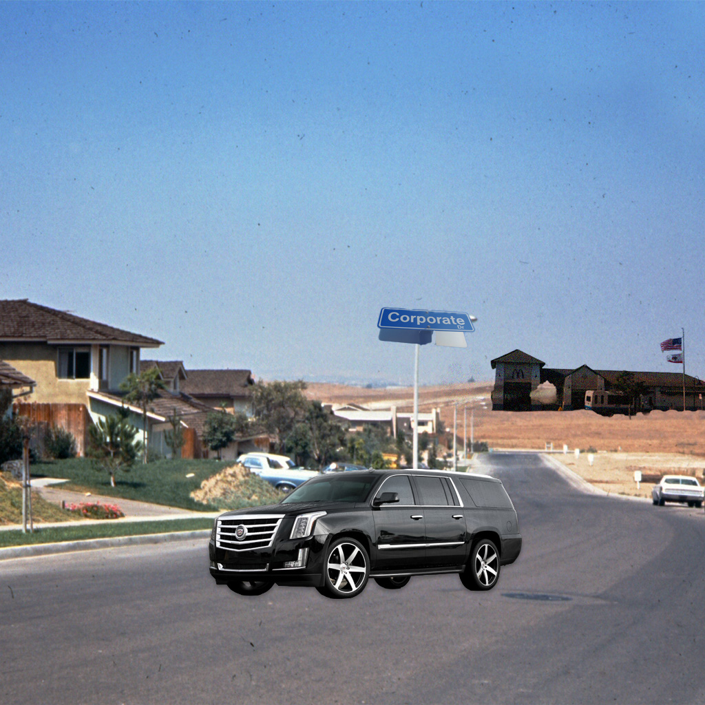

Growing up for Joey meant he couldn't go to any community center or gathering place by walking or biking. He had a personal driver take them everywhere in their Escalade. Joey CC lived in a car-centric suburb; their house was at the end of a cul-de-sac. This made it impossible for him to connect to others and gain exposure to other ways of life. There was no camaraderie between neighbors or others. This place stripped them of any real culture, belonging, or meaning. Without those things being present in their environment.
